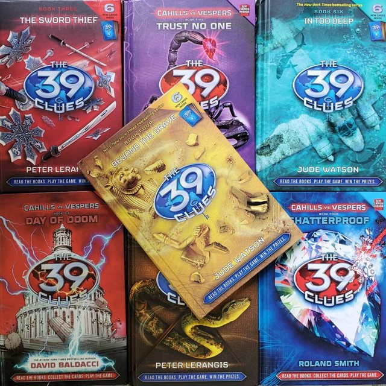

The Eclectic Polymath Podcast · Archive
#121 The New York Times: How a Newspaper Became a Digital Empire

About this episode
The New York Times didn’t survive the collapse of the newspaper business by simply getting better at selling news. It became something much bigger than a newspaper.
This episode looks at how The Times transformed itself into a multi-product subscription business built around News, Games, Cooking, The Athletic, and an increasingly direct relationship with millions of paying customers. It gets into the strategy behind bundling, habit formation, digital subscriptions, and why products like Wordle can matter to the future of journalism almost as much as the front page.
Key points
- The New York Times didn’t survive the collapse of the newspaper business by simply getting better at selling news.
- This episode looks at how The Times transformed itself into a multi-product subscription business built around News, Games, Cooking, The Athletic, and an increasingly direct relationship with millions of paying customers.
- It gets into the strategy behind bundling, habit formation, digital subscriptions, and why products like Wordle can matter to the future of journalism almost as much as the front page.
- star journalists building audiences of their own, the growing power of the creator economy, battles over intellectual property and generative AI, and the challenge of maintaining institutional authority when individual voices can leave and build platforms themselves.
- This is a story about how one of America’s oldest media institutions reinvented its business—and what it has to become to stay powerful.
More like this

#062 The 39 Clues: The Scholastic Treasure Hunt That Built a Transmedia EmpireJune 25, 202656:15 #024: The Fashion Revolution, The Cathedral and The DisruptorsMay 25, 202643:22
#024: The Fashion Revolution, The Cathedral and The DisruptorsMay 25, 202643:22 #221 The Homestead: Who Got Set Up, Who Got StrippedOctober 18, 20261:14:22
#221 The Homestead: Who Got Set Up, Who Got StrippedOctober 18, 20261:14:22 #219 The Grove & The Americana: Fake Towns, Real EmpireOctober 17, 202649:36
#219 The Grove & The Americana: Fake Towns, Real EmpireOctober 17, 202649:36